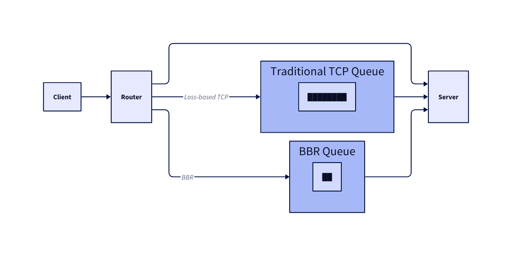

TCP BBR Setup Guide: Optimize Linux, Windows, and FreeBSD Networking¶

If you spend any time tuning networks or moving large amounts of data across the internet, you eventually run into TCP congestion control. This is the part of the networking stack responsible for deciding how fast data should be sent without overwhelming the network.
For decades, most TCP algorithms relied on a simple signal called packet loss. When packets start dropping, the sender assumes congestion and slows down. This works, but it is reactive. The sender only realizes something is wrong after the network has already become congested.
Google proposed a different approach called BBR (Bottleneck Bandwidth and Round-trip Propagation Time). Instead of waiting for packet loss, BBR tries to model the network path in real time and send data at the optimal rate.
The result is often lower latency, faster throughput recovery, and more stable connections.
What BBR Actually Does¶
At a high level, BBR continuously measures two properties of a network path:
- the maximum bandwidth available
- the minimum round trip time (RTT)
With these two measurements, the sender can estimate how much data the network can safely carry.
Traditional algorithms push data until packets drop. BBR instead tries to operate close to the network's natural capacity.
The core ideas behind BBR revolve around three mechanisms.
Bandwidth estimation¶
BBR constantly estimates the bottleneck bandwidth along the network path. This is essentially the maximum rate at which data can move through the slowest segment of the connection.
Rather than increasing transmission blindly, BBR probes the network to measure how quickly acknowledgments arrive and adjusts its estimate over time.
Delay estimation¶
Latency also reveals information about congestion. BBR tracks the minimum RTT it has observed and uses it as a baseline for the propagation delay of the network path.
When RTT begins increasing significantly above that minimum, it usually indicates queue buildup somewhere in the network.
Rate control¶
Using both measurements, BBR calculates how much data should be in flight. The sending window is adjusted so that the sender operates close to the bottleneck bandwidth while avoiding queue buildup.
In practice this keeps the pipeline full without flooding it.
Why BBR Is Different from Traditional TCP¶
Traditional TCP congestion control algorithms, such as Reno or CUBIC, rely primarily on packet loss to detect congestion. The sender gradually increases its transmission rate until packets drop, then backs off and repeats the process.
This creates several inefficiencies. Large queues can build up before packet loss occurs, which increases latency. Recovery from congestion can also be slow because the algorithm reduces throughput aggressively after packet loss.
BBR behaves differently because it estimates the real capacity of the network path, it can:
- recover bandwidth faster
- maintain lower latency
- avoid excessive queue buildup
- provide more stable throughput
Enabling and Verifying BBRv2 on Windows¶
Recent versions of Windows include support for BBR.
Supported Windows versions¶
-
Windows 11 22H2 and later
-
Windows version 10.0.22621+
-
Windows Server 2025
One important detail is that BBR only accelerates upstream TCP traffic.
Check the current congestion control algorithm¶
Open PowerShell with administrator privileges and run:
Example output:
SettingName CongestionProvider
----------- ------------------
Automatic
InternetCustom CUBIC
DatacenterCustom CUBIC
Compat NewReno
Datacenter CUBIC
Internet CUBIC
Enable BBRv2¶
Run the following commands in an elevated PowerShell session.
netsh int tcp set supplemental Template=Internet CongestionProvider=bbr2
netsh int tcp set supplemental Template=Datacenter CongestionProvider=bbr2
netsh int tcp set supplemental Template=Compat CongestionProvider=bbr2
netsh int tcp set supplemental Template=DatacenterCustom CongestionProvider=bbr2
netsh int tcp set supplemental Template=InternetCustom CongestionProvider=bbr2
Verify that BBR is enabled¶
Run the same PowerShell command again:
Expected output:
SettingName CongestionProvider
----------- ------------------
Automatic
InternetCustom BBR2
DatacenterCustom BBR2
Compat BBR2
Datacenter BBR2
Internet BBR2
Reverting to the default congestion control¶
In some environments BBR may interfere with local TCP connectivity. One example is Hyper-V networking.
To restore the default algorithms, run:
netsh int tcp set supplemental Template=Internet CongestionProvider=cubic
netsh int tcp set supplemental Template=Datacenter CongestionProvider=cubic
netsh int tcp set supplemental Template=Compat CongestionProvider=newreno
netsh int tcp set supplemental Template=DatacenterCustom CongestionProvider=cubic
netsh int tcp set supplemental Template=InternetCustom CongestionProvider=cubic
Enabling BBRv3 on Debian and Ubuntu¶
The easiest way to use newer BBR versions on Debian-based systems is to install the XanMod kernel, which ships with BBRv3 enabled.
Install the XanMod kernel¶
wget -qO - https://dl.xanmod.org/archive.key | sudo gpg --dearmor -vo /etc/apt/keyrings/xanmod-archive-keyring.gpg
Download the XanMod GPG key and store it in the system keyring.
echo 'deb [signed-by=/etc/apt/keyrings/xanmod-archive-keyring.gpg] https://mirror.nju.edu.cn/xanmod releases main' | sudo tee /etc/apt/sources.list.d/xanmod-release.list
Add the XanMod repository to APT.
Install the optimized XanMod kernel.
After rebooting, the system will start using the new kernel and BBRv3 will be enabled.
If you are in a region where the mirror above is inaccessible, replace it with another available mirror.
Enabling BBRv1 on RHEL, Rocky, and Similar Systems¶
For RHEL-based distributions, BBR can be enabled through sysctl.
Configure the congestion control algorithm¶
Set the queue scheduler¶
BBR works best with the fq scheduler.
Apply the configuration¶
Verify the configuration¶
On Debian systems running kernel 4.9 or newer, this same method can enable BBRv1 without upgrading the kernel or rebooting.
Enabling BBR in FreeBSD¶
FreeBSD includes BBR as a modular congestion control algorithm.
Load the required modules¶
This configures the system to load the required TCP modules during boot.
Set BBR as the default algorithm¶
Reboot the system¶
Verify the configuration¶
After rebooting:
If the output shows bbr, the algorithm is active.